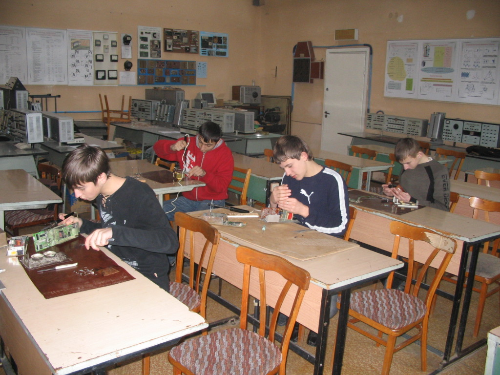
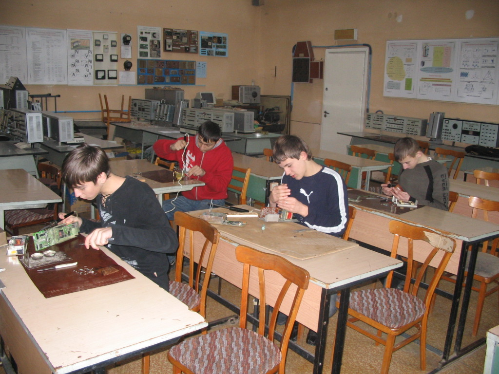

Історія Коледжу електронних приладів
Коледж електронних приладів Івано-Франківського національного технічного університету нафти і газу створено Постановою Кабінету Міністрів України № 526 від 29 травня 1997 року
та наказом Міністерства освіти України № 218 від 20.06.1997 року на базі Івано-Франківського технікуму електронних приладів, який ліквідовано.Івано-Франківський вечірній технікум електронних приладів було створено Міністерством електронної промисловості колишньої держави (наказ № 499-ДСМ від 26 серпня в 1981 році), а 1988 році наказом цього ж Міністерства № 921 від 08 грудня технікум було реорганізовано в денний Івано-Франківський технікум електронних приладів, 29 листопада 1991 року наказом Міністерства вищої освіти України № 231 технікум підпорядкований Міністерству вищої освіти України.
Візитна картка Коледжу електронних приладів
Коледж електронних приладів ІФНТУНГу – це сучасний навчальний заклад в якому створено всі умови для підготовки молодшого спеціаліста, який здатен витримати конкуренцію на ринку праці.
В 2000 році Коледж електронних приладів ІФНТУНГу атестовано Державною атестаційною комісією. З метою координації спільної діяльності навчальних закладів на виконання законів України про освіту, про вищу освіту, впровадження системи ступеневої підготовки фахівців для потреб регіону коледж здійснює свою діяльність в навчально-науково виробничому комплексі ІФНТУНГу, співпрацює із НУ “Львівська політехніка”, Прикарпатським університетом ім. В.Стефаника, Чернівецьким національним університетом ім. Ю. Федьковича.
В межах комплексу розробляються складові галузевого стандарту освіти, залучаються провідні спеціалісти базових ВНЗ-ів ІІІ-ІV рівнів акредитації до роботи ДКК, випускники коледжу продовжують навчання в університетах зі споріднених спеціальностей за скороченими програмами підготовки.
Структурні підрозділи коледжу функціонують відповідно до положень, які розроблені згідно з чинним законодавством.
Навчально-виховний процес в коледжі забезпечують117 викладачів, з них 101 штатних , 1 доктор технічних наук, професор,15 кандидатів наук, доцентів , 10 викладачів-методистів.
Склад, кваліфікація, фахова освіта викладачів та адміністративно-управлінського персоналу відповідає вимогам навчальних планів і штатному розпису.
Коледж у своїй роботі керується чинним законодавством України, наказами Міністерства освіти і науки України, статутом ІФНТУНГу, положенням про коледж та правилами внутрішнього розпорядку, наказами ректора університету.
Зміст навчальних планів та програм, навчально-матеріальна база, якісний склад викладачів, які здійснюють фахову підготовку студентів, забезпечує регіональні потреби сучасної промисловості в молодших спеціалістах.
Навчально-лабораторна база, яка постійно розвивається, відповідає вимогам навчальних планів та програм, забезпечує сучасний рівень підготовки спеціалістів, має у своєму складі 46 навчальних кабінетів та лабораторій, 103 дисплейних місця.
Коледж має добру славу серед випускників, їхніх батьків та громадськості.
Педагогічний колектив навчального закладу усвідомлює мету і завдання освіти в Україні на зламі століть, шукає ефективні шляхи оновлення навчального-виховного процесу і з надією дивиться у майбутнє.
Коледж електронних приладів Івано-Франківського національного технічного університету нафти і газу готує молодших спеціалістів зі спеціальностей:Випускники коледжу отримують дипломи з такими кваліфікаціями:
| Назва відділення | Спеціальність | Кваліфікація диплому | Перелік груп | |||
|---|---|---|---|---|---|---|
| Системна інженерія | Обслуговування комп’ютеризованих інтегрованих і робототехнічних систем | Технік із системного адміністрування | СІ-14-01, СІ-14-02 | СІ-13-01, СІ-13-02 | СІ-12-01, СІ-12-02, СІ-12-03 | СІ-11-01, СІ-11-02, СІ-11-03 |
| Економіко-технічне | Обслуговування комп'ютерних систем та мереж | Технік-програміст | КІ-14-01 | КІ-13-01 | КІ-12-01 | КІ-11-01, КІ-11-01 |
| Економіка підприємства | Молодший спеціаліст з економіки підприємства | ЕП-14-01 | ЕП-13-01 | ЕП-12-01 | ||
| Бухгалтерський облік | Бухгалтер | БО-14-01 | БО-13-01 | БО-12-01 | ||
| Обслуговування верстатів з програмним управлінням і робото технічних комплексів | Електромеханік | ІМ-14-01 | ІМ-13-01 | |||
| Телекомункацій та електроніки | Конструювання, виробництво і технічне обслуговування виробів електронної техніки | Технік-конструктор | ЕЛ-14-01 | ЕЛ-13-01 | ЕЛ-12-01 | ЕЛ-11-01 |
| Монтаж, технічне обслуговування і ремонт обладнання радіозв’язку, радіомовлення та телебачення | Електромеханік засобів радіо і телебачення | ТК-14-01, ТК-14-02 | ТК-13-01, ТК-13-02 | ТК-12-01, ТК-12-02 | ТК-11-01, ТК-11-02 | |
| Програмної інженерії і метрології | Розробка програмного забезпечення | Технік-програміст | ПІ-14-01, ПІ-14-02 | ПІ-13-01, ПІ-13-02 | ПІ-12-01, ПІ-12-02 | ПІ-11-01, ПІ-11-02 |
| Електротеплотехнічні вимірювання | Технік з метрології | МТ-13-01 | ||||
| Пара | Тривалість | Понеділок | Вівторок | Середа | Четвер | П'ятниця | |
|---|---|---|---|---|---|---|---|
| 1 | 8:00-9:20 | ---- | ---- | ---- | ---- | системне програмне забезпечення і операційні системи (Соловчук Г.В., ШологонВ.Д.) | |
| мікропроцесорні системи (Бідасюк М.А., Соловчук Г.В.) | |||||||
| 2 | 9:30-10:50 | філософія (Малик І.В., Черковська Ю.Є. | ---- | ---- | ---- | фізика (Лютенко Т.В.) | |
| 3 | 11:10-12:30 | мікропроцесорні системи (Бідасюк М.А., Соловчук Г.В.) | вища математика (Воронцова О.Б.) | менеджмент (Кобрин О.Т.) | системне ПЗ і операційні системи (Соловчук Г.В.) | менеджмент (Кобрин О.Т.) | вища математика (Воронцова О.Б.) |
| комп’ютерна схемотехніка (Бідасюк М.А.) | фізика (Лютенко Т.В.) | ||||||
| 4 | 12:40-14:00 | вища математика (Воронцова О.Б.) | укр. мова професійного спрямування (Сенів М.В.) | іноземна мова (Люшняк О.М., Клейнота О.С.) | філософія (Малик І.В., Черковська Ю.Є.) | ---- | |
| електроніка та мікросхемотехніка (Максимців Б.Я.) | |||||||
| 5 | 14:10-15:30 | фіз. вих. (Угринчук О.В.) | ---- | матеріали електронної техніки (Кучірка М.М., Максимців Б.Я.) | комп’ютерна схемотехніка (Бідасюк М.А., Шологон В.Д.) | ---- | |
| електроніка та мікросхемотехніка (Максимців Б.Я.) | фізика (Лютенко Т.В.) | ||||||
| 6 | 15:50-17:10 | ---- | ---- | ---- | фіз. вих. (Грицюк Л.В.) | ---- | |
| |
 | |
|
|
| |
|
|
|